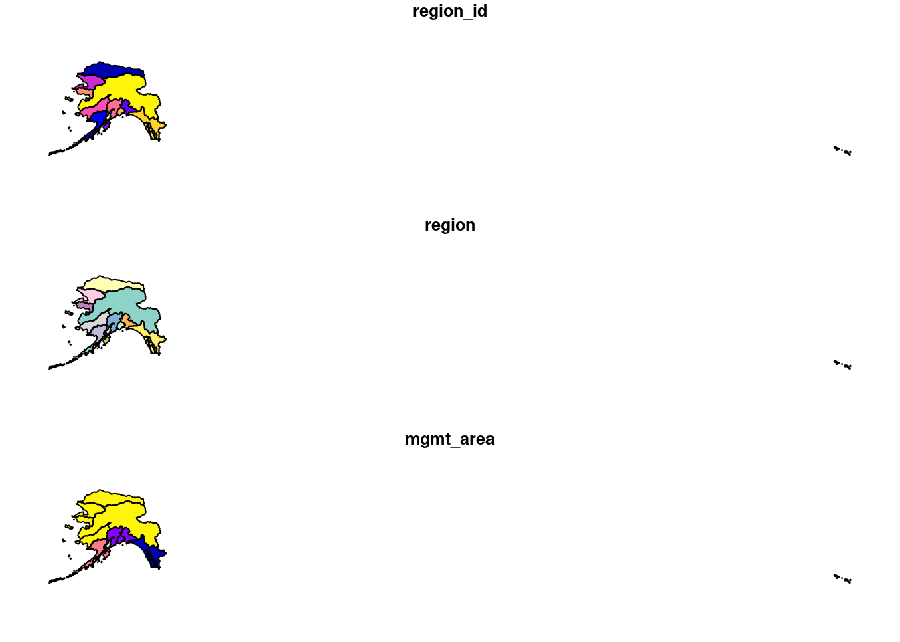

# knb_url <- 'https://dev.nceas.ucsb.edu/knb/d1/mn/v2/object/urn%3Auuid%3Aaceaecb2-1ce0-4d41-a839-d3607d32bb58'
# download.file(url = knb_url, destfile = 'demo_data.zip')
# unzip('demo_data.zip', exdir = 'data')
# file.remove('demo_data.zip')Spatial Analysis
About the data
Setup
Load Libraries
library(readr)
library(sf)
library(ggplot2)
library(leaflet)
library(scales)
library(ggmap)
library(dplyr)xploring the data using plot() and st_crs()
# read in shapefile using read_sf()
ak_regions <- read_sf("data/ak_regions_simp.shp")
# quick plot
plot(ak_regions)
class(ak_regions)[1] "sf" "tbl_df" "tbl" "data.frame"head(ak_regions)Simple feature collection with 6 features and 3 fields
Geometry type: MULTIPOLYGON
Dimension: XY
Bounding box: xmin: -179.2296 ymin: 51.15702 xmax: 179.8567 ymax: 71.43957
Geodetic CRS: WGS 84
# A tibble: 6 × 4
region_id region mgmt_area geometry
<int> <chr> <dbl> <MULTIPOLYGON [°]>
1 1 Aleutian Islands 3 (((-171.1345 52.44974, -171.1686 52.4174…
2 2 Arctic 4 (((-139.9552 68.70597, -139.9893 68.7051…
3 3 Bristol Bay 3 (((-159.8745 58.62778, -159.8654 58.6137…
4 4 Chignik 3 (((-155.8282 55.84638, -155.8049 55.8655…
5 5 Copper River 2 (((-143.8874 59.93931, -143.9165 59.9403…
6 6 Kodiak 3 (((-151.9997 58.83077, -152.0358 58.8271…glimpse(ak_regions)Rows: 13
Columns: 4
$ region_id <int> 1, 2, 3, 4, 5, 6, 7, 8, 9, 10, 11, 12, 13
$ region <chr> "Aleutian Islands", "Arctic", "Bristol Bay", "Chignik", "Cop…
$ mgmt_area <dbl> 3, 4, 3, 3, 2, 3, 4, 4, 2, 4, 2, 1, 4
$ geometry <MULTIPOLYGON [°]> MULTIPOLYGON (((-171.1345 5..., MULTIPOLYGON (((-139.9552 6.…Coordinate Reference System (CRS)
st_crs(ak_regions)Coordinate Reference System:
User input: WGS 84
wkt:
GEOGCRS["WGS 84",
DATUM["World Geodetic System 1984",
ELLIPSOID["WGS 84",6378137,298.257223563,
LENGTHUNIT["metre",1]]],
PRIMEM["Greenwich",0,
ANGLEUNIT["degree",0.0174532925199433]],
CS[ellipsoidal,2],
AXIS["latitude",north,
ORDER[1],
ANGLEUNIT["degree",0.0174532925199433]],
AXIS["longitude",east,
ORDER[2],
ANGLEUNIT["degree",0.0174532925199433]],
ID["EPSG",4326]]ak_regions_3338 <- ak_regions %>%
st_transform(crs = 3338)
st_crs(ak_regions_3338)Coordinate Reference System:
User input: EPSG:3338
wkt:
PROJCRS["NAD83 / Alaska Albers",
BASEGEOGCRS["NAD83",
DATUM["North American Datum 1983",
ELLIPSOID["GRS 1980",6378137,298.257222101,
LENGTHUNIT["metre",1]]],
PRIMEM["Greenwich",0,
ANGLEUNIT["degree",0.0174532925199433]],
ID["EPSG",4269]],
CONVERSION["Alaska Albers (meters)",
METHOD["Albers Equal Area",
ID["EPSG",9822]],
PARAMETER["Latitude of false origin",50,
ANGLEUNIT["degree",0.0174532925199433],
ID["EPSG",8821]],
PARAMETER["Longitude of false origin",-154,
ANGLEUNIT["degree",0.0174532925199433],
ID["EPSG",8822]],
PARAMETER["Latitude of 1st standard parallel",55,
ANGLEUNIT["degree",0.0174532925199433],
ID["EPSG",8823]],
PARAMETER["Latitude of 2nd standard parallel",65,
ANGLEUNIT["degree",0.0174532925199433],
ID["EPSG",8824]],
PARAMETER["Easting at false origin",0,
LENGTHUNIT["metre",1],
ID["EPSG",8826]],
PARAMETER["Northing at false origin",0,
LENGTHUNIT["metre",1],
ID["EPSG",8827]]],
CS[Cartesian,2],
AXIS["easting (X)",east,
ORDER[1],
LENGTHUNIT["metre",1]],
AXIS["northing (Y)",north,
ORDER[2],
LENGTHUNIT["metre",1]],
USAGE[
SCOPE["Topographic mapping (small scale)."],
AREA["United States (USA) - Alaska."],
BBOX[51.3,172.42,71.4,-129.99]],
ID["EPSG",3338]]plot(ak_regions_3338)sf & the Tidyverse
`select()’
# returns the names of all the columns in dataset
colnames(ak_regions_3338)[1] "region_id" "region" "mgmt_area" "geometry" ak_regions_3338 %>%
select(region)Simple feature collection with 13 features and 1 field
Geometry type: MULTIPOLYGON
Dimension: XY
Bounding box: xmin: -2175328 ymin: 405653 xmax: 1579226 ymax: 2383770
Projected CRS: NAD83 / Alaska Albers
# A tibble: 13 × 2
region geometry
<chr> <MULTIPOLYGON [m]>
1 Aleutian Islands (((-1156666 420855.1, -1159837 417990.3, -1161898 41694…
2 Arctic (((571289.9 2143072, 569941.5 2142691, 569158.2 2142146…
3 Bristol Bay (((-339688.6 973904.9, -339302 972297.3, -339229.2 9710…
4 Chignik (((-114381.9 649966.8, -112866.8 652065.8, -108836.8 65…
5 Copper River (((561012 1148301, 559393.7 1148169, 557797.7 1148492, …
6 Kodiak (((115112.5 983293, 113051.3 982825.9, 110801.3 983211.…
7 Kotzebue (((-678815.3 1819519, -677555.2 1820698, -675557.8 1821…
8 Kuskokwim (((-1030125 1281198, -1029858 1282333, -1028980 1284032…
9 Cook Inlet (((35214.98 1002457, 36660.3 1002038, 36953.11 1001186,…
10 Norton Sound (((-848357 1636692, -846510 1635203, -840513.7 1632225,…
11 Prince William Sound (((426007.1 1087250, 426562.5 1088591, 427711.6 1089991…
12 Southeast (((1287777 744574.1, 1290183 745970.8, 1292940 746262.7…
13 Yukon (((-375318 1473998, -373723.9 1473487, -373064.8 147393…filter()
unique(ak_regions_3338$region) [1] "Aleutian Islands" "Arctic" "Bristol Bay"
[4] "Chignik" "Copper River" "Kodiak"
[7] "Kotzebue" "Kuskokwim" "Cook Inlet"
[10] "Norton Sound" "Prince William Sound" "Southeast"
[13] "Yukon" ak_regions_3338 %>%
filter(region == "Southeast")Simple feature collection with 1 feature and 3 fields
Geometry type: MULTIPOLYGON
Dimension: XY
Bounding box: xmin: 559475.7 ymin: 722450 xmax: 1579226 ymax: 1410576
Projected CRS: NAD83 / Alaska Albers
# A tibble: 1 × 4
region_id region mgmt_area geometry
* <int> <chr> <dbl> <MULTIPOLYGON [m]>
1 12 Southeast 1 (((1287777 744574.1, 1290183 745970.8, 1292940 …Spatial Joins
Read in alaska_population.csv using read.csv()
# read in population data
pop <- read_csv("data/alaska_population.csv")Turn pop into a spatial object
pop_4326 <- st_as_sf(pop,
coords = c('lng', 'lat'),
crs = 4326,
remove = F)
head(pop_4326)Simple feature collection with 6 features and 5 fields
Geometry type: POINT
Dimension: XY
Bounding box: xmin: -176.6581 ymin: 51.88 xmax: -154.1703 ymax: 62.68889
Geodetic CRS: WGS 84
# A tibble: 6 × 6
year city lat lng population geometry
<dbl> <chr> <dbl> <dbl> <dbl> <POINT [°]>
1 2015 Adak 51.9 -177. 122 (-176.6581 51.88)
2 2015 Akhiok 56.9 -154. 84 (-154.1703 56.94556)
3 2015 Akiachak 60.9 -161. 562 (-161.4314 60.90944)
4 2015 Akiak 60.9 -161. 399 (-161.2139 60.91222)
5 2015 Akutan 54.1 -166. 899 (-165.7731 54.13556)
6 2015 Alakanuk 62.7 -165. 777 (-164.6153 62.68889)Example: Makes an error
# #| warning: false
# #| message: false
#
# pop_joined <- st_join(pop_4326, ak_regions_3338, join = st_within)pop_3338 <- st_transform(pop_4326, crs = 3338)pop_joined <- st_join(pop_3338, ak_regions_3338, join = st_within)
head(pop_joined)Simple feature collection with 6 features and 8 fields
Geometry type: POINT
Dimension: XY
Bounding box: xmin: -1537925 ymin: 472626.9 xmax: -10340.71 ymax: 1456223
Projected CRS: NAD83 / Alaska Albers
# A tibble: 6 × 9
year city lat lng population geometry region_id region
<dbl> <chr> <dbl> <dbl> <dbl> <POINT [m]> <int> <chr>
1 2015 Adak 51.9 -177. 122 (-1537925 472626.9) 1 Aleutian…
2 2015 Akhiok 56.9 -154. 84 (-10340.71 770998.4) 6 Kodiak
3 2015 Akiachak 60.9 -161. 562 (-400885.5 1236460) 8 Kuskokwim
4 2015 Akiak 60.9 -161. 399 (-389165.7 1235475) 8 Kuskokwim
5 2015 Akutan 54.1 -166. 899 (-766425.7 526057.8) 1 Aleutian…
6 2015 Alakanuk 62.7 -165. 777 (-539724.9 1456223) 13 Yukon
# … with 1 more variable: mgmt_area <dbl>Calculate the total population by region using group_by() and summarize()
pop_region <- pop_joined %>%
as.data.frame() %>%
group_by(region) %>%
summarise(total_pop = sum(population))
head(pop_region)# A tibble: 6 × 2
region total_pop
<chr> <dbl>
1 Aleutian Islands 8840
2 Arctic 8419
3 Bristol Bay 6947
4 Chignik 311
5 Cook Inlet 408254
6 Copper River 2294pop_region_3338 <- left_join(ak_regions_3338, pop_region, by = "region")
# plot to check
plot(pop_region_3338["total_pop"])Calculate the population by Alaska management area, as opposed to region
pop_mgmt_338 <- pop_region_3338 %>%
group_by(mgmt_area) %>%
summarize(total_pop = sum(total_pop))
plot(pop_mgmt_338["total_pop"])If we don’t want to combine geometries, we can specify do_union = F as an argument
pop_mgmt_3338 <- pop_region_3338 %>%
group_by(mgmt_area) %>%
summarize(total_pop = sum(total_pop), do_union = F)
plot(pop_mgmt_3338["total_pop"])
Save the spatial object to a new file using
write_sf(pop_region_3338, "data/ak_regions_population.shp")